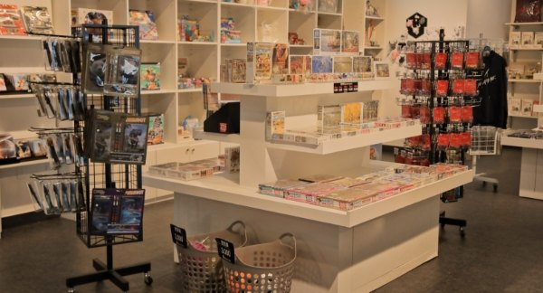

무료·할인 관람
24개월 미만은 무료입니다. 매월 마지막 주 수요일 ‘문화가 있는 날’(공휴일·7월 제외)과 만 18세 미만 자녀 2명 이상과 함께 오는 다자녀 가족은 20% 할인됩니다.
관람 요금 보기
아니마,
지금 양평에서
제21회 기획전 《아니마(ANIMA) — 연필 끝에서 살아나는 우리들의 얼굴》. 애니메이션박물관(8.11–9.13)과 가평 음악역1939(9.19–10.18)를 거쳐 양평 황순원문학촌에서 11월 29일까지 이어집니다.
기획전 보기
더빙·폴리아티스트
체험
2층 체험공간에서 소리를 만들어 내는 폴리아티스트 체험과 더빙체험을 할 수 있습니다.
체험 안내
몸으로 느껴보는
핀스크린2층 애니메이션이랑 놀자
핀스크린 체험, 주인공 체험, 캐릭터 변검체험을 할 수 있습니다. 연 2회 이상 애니메이션 기획전과 교육·행사·체험을 운영합니다.

뮤지엄샵과
구름빵 카페1층
관람을 마치고 1층 뮤지엄샵과 구름빵 카페에 들러 보세요. 온라인 버츄얼 뮤지엄에서는 1층·2층을 VR로 미리 구경할 수 있습니다.
관람 안내오늘 10:00–18:00 운영
시간
10:00–18:00 (입장 마감 17:00)
화요일–일요일
정기휴관: 매주 월요일(월요일이 공휴일이면 다음날), 1월 1일, 설·추석 당일
관람에는 약 1시간 30분~2시간이 걸립니다. 오후 4시 이전 입장을 권장합니다.
관람권
- 개인
- 7,000원
- 단체(20인 이상)
- 5,600원
- 춘천시민
- 5,000원
애니메이션박물관과 토이로봇관 통합 관람권이며 모든 연령이 같습니다. 단체·춘천시민은 현장발권만 됩니다.
무료·할인
무료: 24개월 미만, 1~3등급 중증장애인(동반 1인), 국가유공자(동반 배우자), 자료 기증자(가족 포함), 병역명문가(본인)
20% 할인: 매월 마지막 주 수요일 ‘문화가 있는 날’(공휴일·7월 제외), 다자녀(만 18세 미만 자녀 2명 이상 함께 방문)
온라인 예매는 당일 오후 3시까지(예매 1시간 뒤 사용), 네이버·인터파크에서 할 수 있습니다.
오시는 길춘천시 서면 박사로 854
주소
강원특별자치도 춘천시 서면 박사로 854 (24461)
애니메이션박물관 033-245-6470
토이로봇관 033-245-6460
기차·버스
ITX-청춘 용산–춘천 1시간 10분
경춘선 상봉–춘천 1시간 20분
시외버스 동서울–춘천 1시간 10분